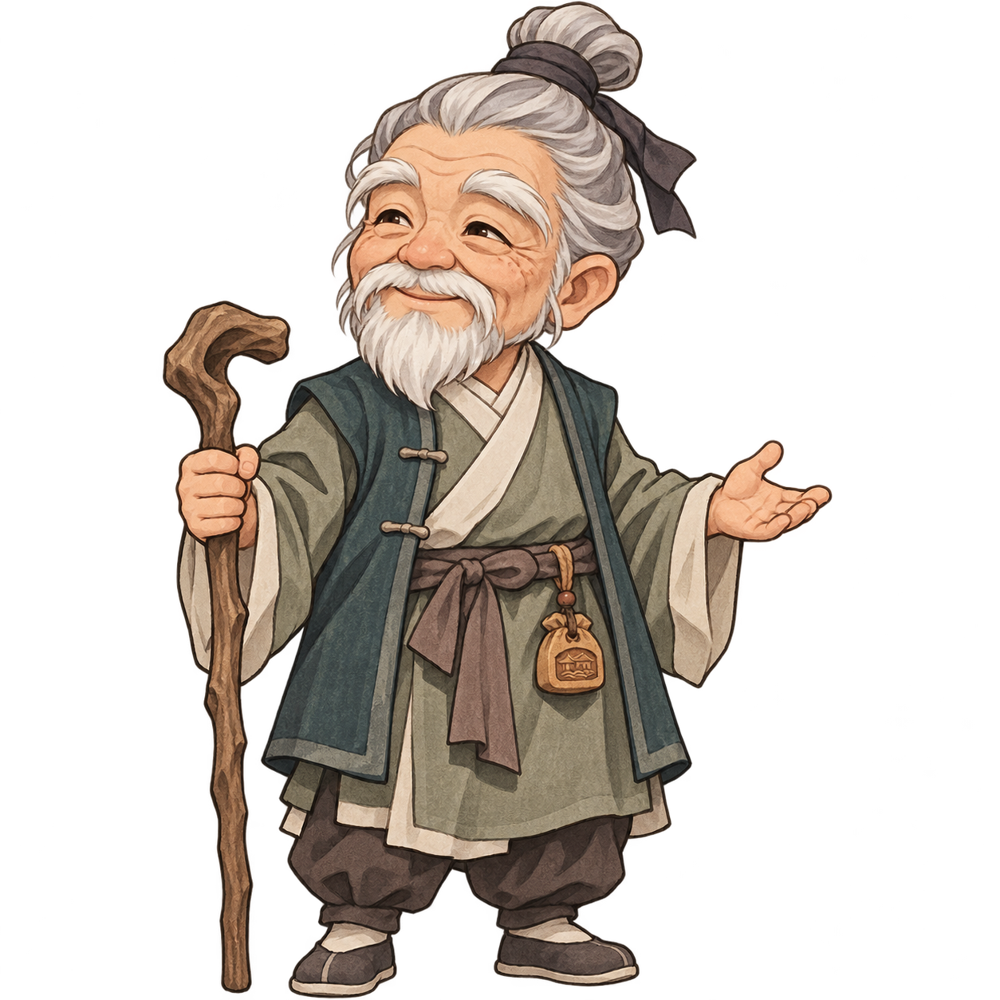

雨
听雨江湖
A LITTLE WORLD OF WUXIA
江湖手记 · 第一回一蓑烟雨，初入江湖。
听雨村·南埠村口
正在铺开江湖画卷…

老村长 · 村长淬体一重
老村长
听雨武馆 · 演武院
以武会友
第 一 回合你的回合
你无名少侠淬体一重
气血
100 / 100
灵力
20 / 20
友武青山通脉二重
气血
248 / 248
灵力
82 / 82
拳脚见真章，点到即止。
武馆切磋 · 点到即止
战况 · 请选择行动
双方每整回合结束恢复灵力，推山掌消耗 8 灵力。
点到即止 · 以武会友
切磋获胜
F 收集花卉 · B 行囊 · R 修炼原创场景 · 修炼篇 10